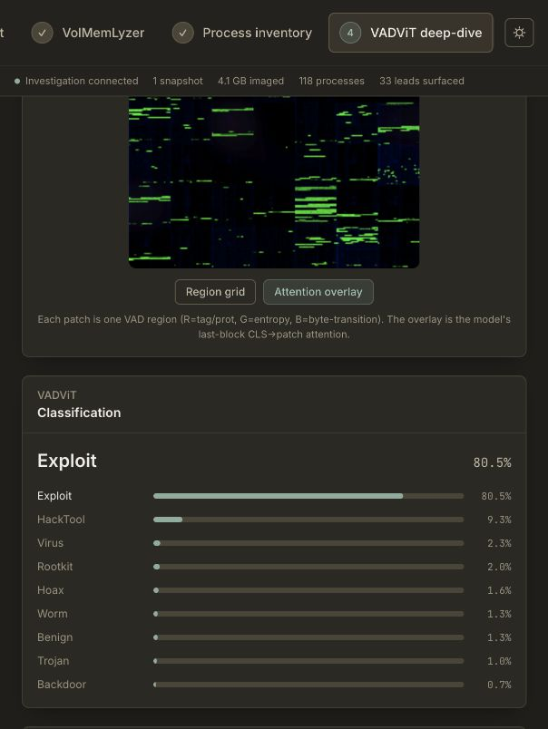
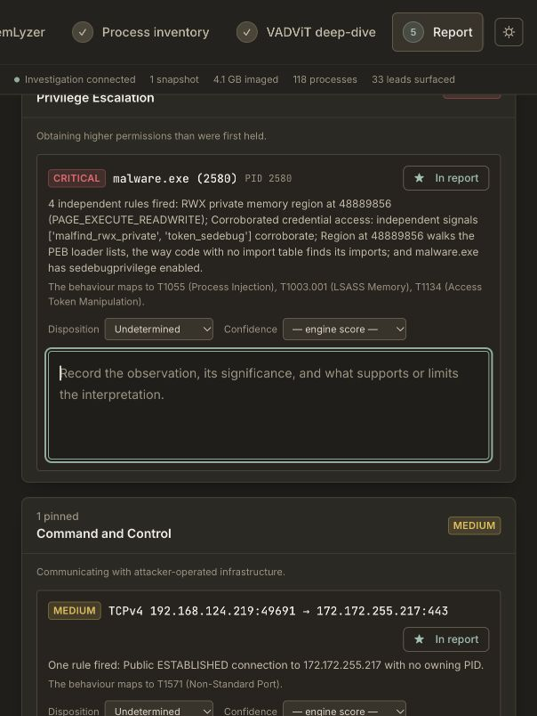

From a memory snapshot to an assessment you can defend.
A captured memory image contains the programs, connections, and data present on a computer at one moment. MemTriage connects ranked leads, model-guided inspection, and report writing in one local workspace, so an analyst can follow a concern down to the bytes and explain what they mean.
Keep the question connected to its evidence.
Separate tools can produce a process list, a risk score, a class prediction, and a disassembly. The useful part is the connection between them: knowing which input and address support a lead, then carrying those observations and their limits into the report.
- 01 / COLLECT
Choose the checks.
Upload captured Windows memory. Run a light pass or expand coverage, retaining extraction status and reusable artifacts.
- 02 / PRIORITISE
Review ranked leads.
Inspect process, connection, and persistence evidence with the rules contributing to each score.
- 03 / EXAMINE
Follow the addresses.
Select a process, inspect model-weighted regions, and review instructions, strings, structure, and bytes.
- 04 / EXPLAIN
Write the assessment.
Select exhibits, record interpretation and uncertainty, and prepare reports for two audiences.
Extraction and ranking
VolMemLyzer runs the selected Volatility checks and turns their outputs into reviewable leads. Scores depend on coverage, rules, and the chosen sensitivity profile. Re-scoring cached results changes prioritisation without changing the image.
Guidance and inspection
VADViT classifies a process’s memory representation and maps attention to memory regions, called virtual address descriptors (VADs). MemTriage’s backend owns preprocessing and inference; its worker image is inference-only and does not copy the training submodule.
The root analysis recording shows this workflow in the current UI. The original recording is preserved, without conversion. Detailed methodology, model configuration, and extraction/scoring reference remain separate.
What is the private allocation doing?
The input is 2580_5.vmem, a 4,412,228,315-byte image from a controlled sample run. The subject is malware.exe, PID 2580, a WOW64 process. Its name identifies the sample here; it is not evidence of behaviour.
Scope of the saved analysis
Volatility 3 Framework 2.28.0 produced outputs for 22 requested plugins. The saved record reports reuse of local artifacts. Triage used the aggressive profile, a 20% confidence floor, and no requirement for correlation.
Process extraction returned 80 VADs; 49 contributed regions appear in the ranked grid. Five regions were analysed. These counts describe this examination, not a speed benchmark, detection-rate measurement, or exhaustive review.
The model provides a starting point.
Leading four of nine classes from the trained checkpoint. The class score is not a calibrated probability that a vulnerability was exploited. No independent outcome validation was performed for this image.

Attention rank and forensic significance are different.
The highest-attention region is a system-library mapping. The second-ranked region is the private allocation that warrants the focused investigation. Attention helps allocate review effort; it does not decide which bytes are malicious or causally explain the classifier.
| Rank | Start address | Memory backing | Bytes | Attention | Review consequence |
|---|---|---|---|---|---|
| 1 | 0x72ce0000 | dhcpcsvc.dll | 94,208 | 1.000000 | File-backed i386 image; saved x86-64 decoding needs correction. |
| 2 | 0x2ea0000 | Private; no backing file | 8,192 | 0.629570 | Principal executable-memory exhibit. |
| 3 | 0x72d80000 | cryptsp.dll | 86,016 | 0.429805 | Architecture mismatch; partial structure coverage. |
| 4 | 0x72c20000 | ncrypt.dll | 155,648 | 0.408780 | Architecture mismatch; partial structure coverage. |
| 5 | 0x72bd0000 | ncryptsslp.dll | 131,072 | 0.389522 | Validate architecture and layout; absent MZ bytes are inconclusive. |
What the private region shows
0x2ea0000–0x2ea1fff is private memory, with no backing file and PAGE_EXECUTE_READWRITE protection. The saved x86 listing at 0x2ea0b79 reads fs:[0x30]; the following instruction reads [eax + 0xc]. Those observations support a process-environment-block and loader-structure access interpretation.
0x2ea0b79 64 a1 30 00 00 00 mov eax, dword ptr fs:[0x30]
0x2ea0b7f 8b 40 0c mov eax, dword ptr [eax + 0xc]The matching malfind output is agreement within the same image, not independent ground truth. A backward branch is a candidate for manual review; it does not itself demonstrate a decoder or decryption.
What remains unresolved
Writable executable memory and loader-related instructions are consistent with loader or payload code. They do not establish who allocated it, whether it executed, or whether another process injected it. A legitimate runtime explanation remains testable.
An HTTP URL appears at offset 0x170b, virtual address 0x2ea170b. Its presence does not show a network request. Several DLL listings were decoded as x86-64 despite i386 metadata; instruction-level conclusions for those mappings are deferred.
The larger DLL structure views cover only 65,536 bytes. No malicious modification or header erasure is established by this review.
A scored lead still needs an explanation.
The dataset creator confirmed that Task Scheduler and logging scripts were used to launch and record the sample. These artifacts belong in the record, with their collection role stated explicitly.
Recorded launch and logging context
svchost.exe · PID 1232 · Schedule service
↳ powershell.exe · PID 3768 · log_pid.ps1
↳ malware.exe · PID 2580
↳ powershell.exe · PID 5088 · export_logs.ps1
The LOG task also references the export script. The reviewed reports classify the scheduler and logging evidence as collection artifacts. High triage scores do not override that provenance. Inconsistent stored task times are not used to reconstruct execution.
The network lead has no owning PID.
The saved connection is 192.168.124.219:49691 → 172.172.255.217:443, reported ESTABLISHED without an owning process. This examination cannot connect it to PID 2580 or the embedded URL.
An address and port do not establish protocol, command-and-control, or exfiltration. Enabled SeDebugPrivilege similarly indicates a capability, not credential dumping. Automatic ATT&CK alignments are triage labels, not proof or a chronological attack chain.
Select the evidence. Own the conclusion.
MemTriage structures a report from saved investigation results. The analyst chooses which findings and regions to include, adds notes, assigns disposition and confidence, and writes the assessment and next actions.
report_demo.mp4 recording (2m 53s), preserved without re-encoding. Open on GitHub · Local recording · Recording and analysis guide.
Keep observation and interpretation together.
A finding’s note can explain why a high-ranked process is collection instrumentation, why a memory region warrants further examination, or why a connection remains unattributed. Disposition distinguishes attacker activity, collection artifacts, benign findings, and unresolved evidence. Analyst confidence is separate from the engine score.
The Narrative tab holds the working hypothesis, executive summary, and recommendations. Evidence selection and narrative are saved with the investigation; the system arranges them into the report.
Two audiences, one evidence record
Technical: method, selected findings, memory exhibits and their notes, interpretation, and follow-up detail.
Executive: a compact assessment with the selected findings, summary, and recommendations.
In Preview & export, choose the audience, open the printable report, then use the browser’s Print → Save as PDF. Disable browser headers and footers and enable background graphics. Raw JSON export provides investigation results; it is not a replacement for the curated report and its analyst annotations.
Current export boundaries
The recording guide documents that Scope & objectives and Examiner information save in the editor but are not printed by the current HTML templates. Include essential examination context in the printed hypothesis. Executive summary appears in the executive export; region exhibits and their notes appear in the technical export. Check both previews before delivery.
Reviewed examination of five selected objects and five memory exhibits, including loader observations, collection context, decoding limitations, and unresolved network attribution.
The principal finding, what the examination did not establish, and the targeted next steps in language suitable for a decision-maker.
These supplied PDFs are reviewed revisions of the saved report outputs, preserved byte-for-byte. They include a fuller selection and interpretation than the UI state captured above. They are not presented as untouched automatic exports. The saved evidence extract and walkthrough make that distinction traceable.
The next step is targeted validation.
This examination supports a focused loader/payload hypothesis at moderate confidence. It does not identify a vulnerability, demonstrate successful exploitation, or establish a production compromise.
Follow-up that would strengthen the assessment
- Preserve the image hash, region extracts, plugin artifacts, checkpoint, labels, and dataset harness configuration.
- Decode the system-library mappings in the appropriate architecture and compare pages with trusted DLLs matching the host build.
- Trace allocation and execution of the private region in an isolated lab; test legitimate runtime and sample-code explanations.
- Correlate network observations with process-attributed telemetry and packet or proxy records before linking the URL and connection.
What this demonstration cannot measure
One saved experiment does not establish general detection accuracy, classifier calibration, processing speed, or resistance to malformed images. Cached artifacts were reused; this review reran no pipeline and reconstructed no complete acquisition or custody history.
Unselected leads and unanalysed memory remain outside the focused report. Model attention, byte signatures, and capped listings need manual interpretation. The original VADViT research results are not treated as performance measurements for this MemTriage deployment.
Run locally. Keep the analysis attributable.
Git, Git LFS, and Docker with Compose v2 are required. Start Docker, clone recursively, and use the launcher. The pinned extraction and model repositories are dependencies; the trained checkpoint is bundled through Git LFS.
git lfs install
git clone --recurse-submodules https://github.com/YaCnDehfuli/MemTriage.git
cd MemTriage
./deploy/up.shOpen localhost:5173. For an existing checkout, run git lfs pull before launch. The launcher initialises missing pinned submodules and checks the model; investigation data and extraction artifacts persist in Docker volumes. The example image itself is not distributed with this report.
Controlled symbol retrieval
The forensic worker has no direct/general internet egress. Required symbols pass through symbolproxy, with allowlisted hosts, HTTPS upgrade, port 443 enforcement, redirect checks, a response cap, and request logging. A persistent /data/symbols cache supports reuse and fully offline operation.
Symbols and offline configuration · Deployment configuration
Exact input, model, and saved-analysis identifiers
- Image SHA-256
777d71d7106e5ded19592c075058da12049bfcd658221e70f0579ad4bbd9cff4- Private region SHA-256
a4428fb76a495592f6698f14fd826f15e2c9b34c084d13d6286c6d0ce09255eb- Checkpoint
models/Multi_32_224_6f_3u.pt; SHA-256740ab8f1ad128a93e686739023519960a6394ca7b90d8af07d2ebd3eaf2aec92; nine classes frommodels/labels.json; CPU inference by default.- Representation
- 224 × 224 RGB process grid; 7 × 7 patches of 32 × 32 pixels.
- Investigation
4ab70cc1-3819-417d-a34c-9aae27c9bb73- Process analysis
65f1ffda-d96a-412a-9f13-6404576f899c- Saved result generated
2026-10-01T23:36:12.863284+00:00- Image-reported system time
2024-12-27T07:57:04Z; not independently verified acquisition time.- Source record
- Read-only evidence extract; reviewed technical PDF; revision notes.